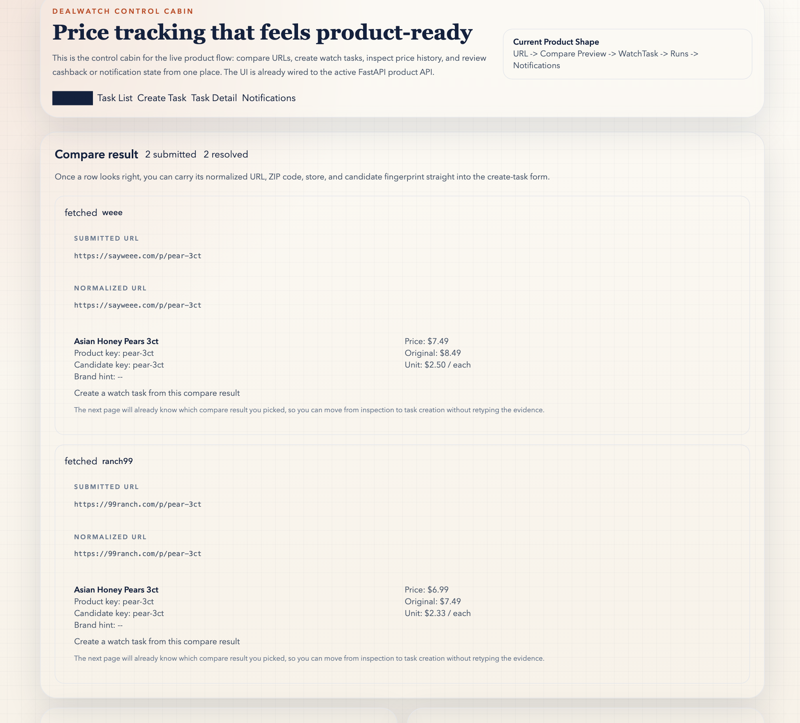
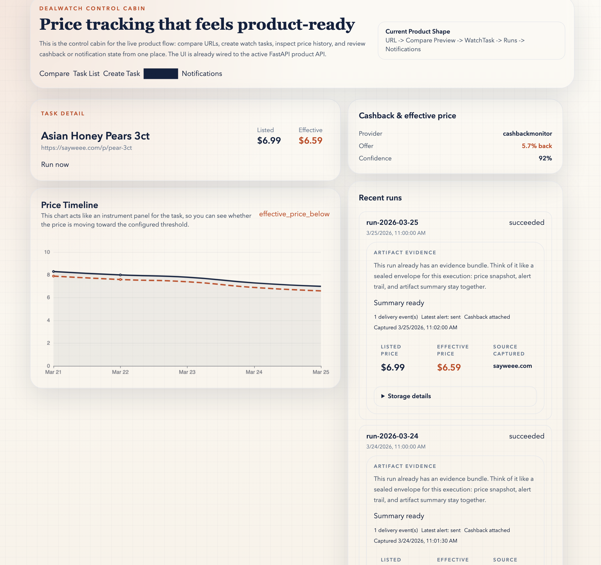
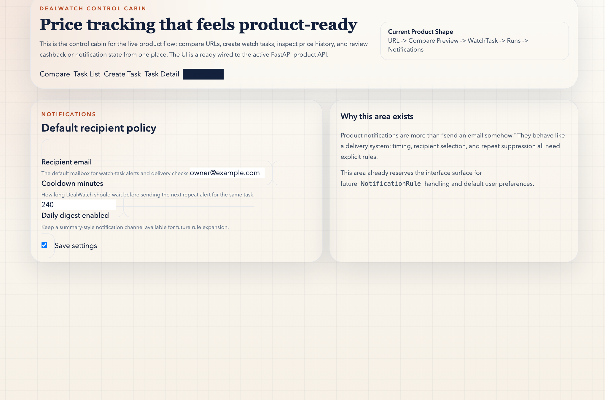

1. Compare the target first
Start with normalized URLs, candidate keys, and match scores before you create a durable watch task or compare-aware watch group.
DealWatch is strongest when the real job starts before you save a watch: compare the candidate URLs, keep the cross-store basket alive, then carry the winning row into a local runtime with proof, effective-price context, and alert history still attached.
AI-assisted explanation stays on top of deterministic evidence. These public pages are read-only proof surfaces, not hosted automation.
Builder route for Codex / Claude Code
The first screenshot already shows the real product move: supported URLs, normalized rows, and match confidence before anything becomes durable state.
Proof is not a separate brochure. The same loop carries compare evidence, effective price, health, and alert state into the local runtime.
The builder path matters, but only after the product already makes sense. It stays a specialist door, not the first thing strangers must decode.

Full static Compare Preview evidence from the public sample fixture, so the first screen stays legible without relying on a cropped promo collage.
DealWatch is not a marketing-only shell. The homepage keeps the promise simple, and the proof page carries the route, command, and verifier trail so this page does not become a second facts ledger or pretend the product is already an autonomous recommendation agent.
Compare Preview lets you validate cross-store URLs with normalized candidates and explainable match reasons before turning one into a watch task or compare-aware watch group.
Track cashback-adjusted price instead of treating listed price as the only truth surface.
Task detail exposes price history, runs, cashback evidence, health state, and delivery events in one panel.
Run the local stack when you want to test your own URLs, then use Proof and Releases when you want the authoritative runtime and release entrypoints.
Compare Preview is the fast visual hook. Proof is the trust step. Quick Start is the first real local win. Builders stays the specialist route once the product story is already clear.
Open Compare Preview first when you want to see the product shape in under a minute without installing anything.
Open Quick Start when you are ready to run the local API, worker, and WebUI for your own grocery URLs.
Open Builders when your real job is wiring the read-only MCP, starter pack, client recipes, and static mirrors for Codex, Claude Code, and similar agents after the product story is already clear.
Most tools start after you already picked one URL. DealWatch starts earlier: compare the aisle first, hold onto cross-store context, then let proof, price history, and alert state travel with the same decision.
The public surface works best when it shows one readable story: compare the candidate, inspect the evidence bundle, then confirm the alert policy that turns a successful run into a useful notification.
Start with normalized URLs, candidate keys, and match scores before you create a durable watch task or compare-aware watch group.

Task detail is where the evidence bundle lives: price history, effective price, cashback, delivery trail, and artifact summary all in one panel.

Notification settings close the loop by showing who gets the alert and how often the product is allowed to send it.
Start with the current product surface, then follow capability updates through the stable release entrypoint.
Use the latest release notes when you want the newest public change summary, and use the full releases list when you want the broader history without depending on a hand-maintained version badge inside this page.
DealWatch is now set up to feel active in public, not just technically available.